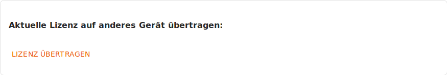

eBlocker Help > Wissensdatenbank > eBlocker Menü
eBlocker Base ✓ / eBlocker Pro ✓ / eBlocker Family ✓
Diese Seite ist weiter unterteilt in die folgenden Abschnitte:
Hier sehen Sie Details zu Ihrer Aktualisierungslizenz und Ihrem eBlocker.

Der Link Lizenz vergleichen führt Sie in den eBlocker Online Shop.

Der Link Lizenz übertragen führt Sie auf eine Webseite, über die Sie die Lizenz von einem Gerät lösen können, um sie anschließend für ein anderes Gerät zu verwenden.

Über die Schaltfläche Neue Lizenz aktivieren können Sie den Lizenzschlüssel für eine Verlängerung der Lizenz (z.B. auf eine Lifetime-Lizenz) oder für ein Upgrade der Lizenz (z.B. von eBlocker Pro auf eBlocker Family) eingeben und aktivieren.

Diese Seite zeigt an, welche Versionen der eBlocker Software sowie der eBlocker Filterregeln gerade auf Ihrem Gerät in Betrieb sind.

Falls eine gültige Aktualisierungslizenz für das Gerät aktiviert ist, können Sie automatische Aktualisierungen einschalten und festlegen, zu welcher Uhrzeit diese täglich durchgeführt werden sollen.

In der Grundeinstellung sind automatische Aktualisierungen eingeschaltet und werden in der Zeit zwischen 02:00 Uhr und 03:00 Uhr Ortszeit durchgeführt.
Wenn Sie die Funktion der automatischen Aktualisierungen deaktivieren, können Sie jederzeit selber Updates einspielen. Sobald ein neues Update für Sie zur Verfügung steht, wird dies neben dem Button Jetzt prüfen angezeigt.

Hier finden Sie eine kurze Nachricht von dem eBlocker Team.
Hier können Sie den Endbenutzer-Lizenzvertrag (EULA), die eBlocker Allgemeine Geschäfts- und Vertragsbedingungen und die verwendete Open-Source Lizenzen einsehen.